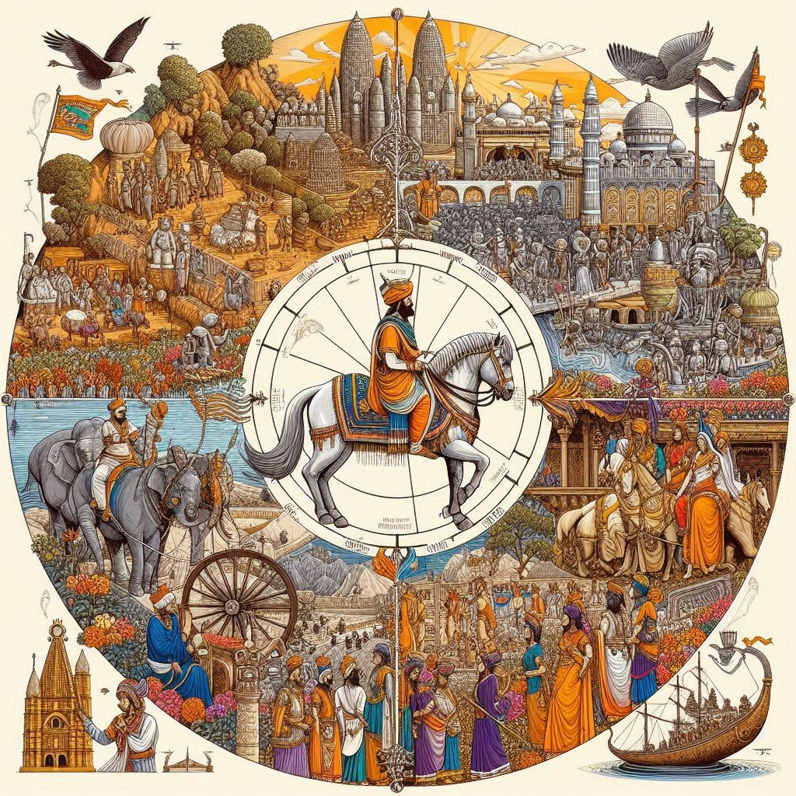
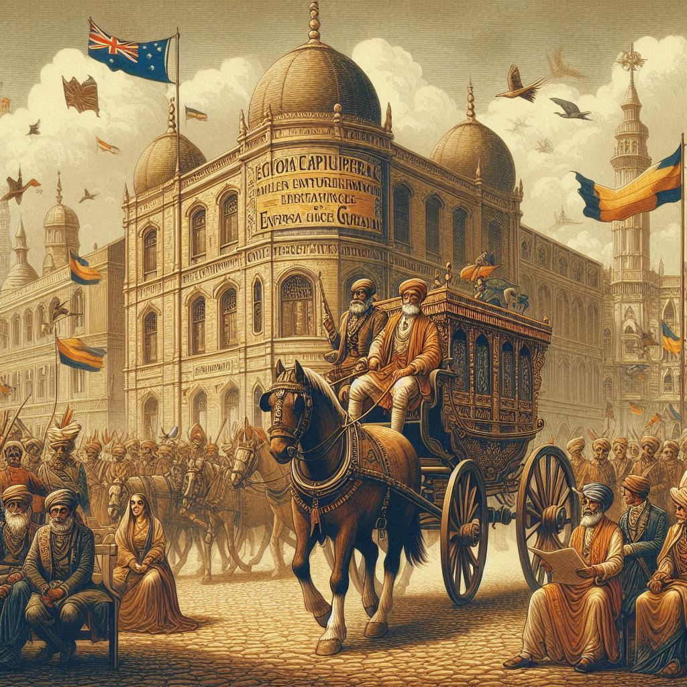

The history of Gujarat is rich and diverse, tracing its roots back to ancient times. This western state of India has witnessed a plethora of historical events and cultural transformations, shaped by indigenous traditions, foreign influences, and dynamic trade connections. Here’s an overview of Gujarat’s historical journey:
1. Ancient Period
- Indus Valley Civilization: Gujarat was home to one of the world's earliest urban cultures, the Indus Valley Civilization, with prominent sites such as Lothal, Dholavira, and Surkotada. Lothal is renowned for its advanced dockyard and was an important trading center.
- Mauryan Empire: After the decline of the Indus Valley Civilization, Gujarat became a part of the Mauryan Empire under Emperor Chandragupta Maurya and later flourished under Ashoka the Great. Buddhism spread widely during Ashoka's reign.
- Post-Mauryan Dynasties: The region saw the rise of various dynasties, including the Sakas (Western Satraps) and the Guptas. The Maitrakas ruled from their capital at Vallabhi from the 5th to 8th centuries CE and became a major center of learning.
2. Medieval Period
- Chaulukya (Solanki) Dynasty: From the 10th to 13th centuries, the Chaulukya dynasty, with rulers such as King Bhima I and Kumarapala, brought prosperity and cultural development. The magnificent Sun Temple at Modhera was built during this period.
- Muslim Rule: Gujarat came under Muslim rule in the 14th century when it was annexed by the Delhi Sultanate. Later, it became an independent Gujarat Sultanate under Zafar Khan Muzaffar, who established the Muzaffarid dynasty. The sultanate's capital, Ahmedabad, was founded by Sultan Ahmed Shah in 1411, and it grew into a thriving trade and cultural center.
- Mughal Era: The Gujarat Sultanate was conquered by the Mughal Empire in 1573 under Emperor Akbar. During this period, Gujarat became an important port for trade with the Middle East, Europe, and Southeast Asia.


3. European Colonial Influence
- Portuguese in Diu: In the early 16th century, the Portuguese established a stronghold in Diu, marking the beginning of European colonial influence in Gujarat.
- British Control: By the early 19th century, the British East India Company took control of Gujarat. The British developed infrastructure and trade but also faced resistance from local rulers and the populace.
4. Role in the Indian Freedom Struggle
- Mahatma Gandhi and the Independence Movement: Gujarat played a significant role in India's struggle for independence. Mahatma Gandhi, the Father of the Nation, was born in Porbandar, Gujarat, and led several key movements such as the Salt March (Dandi March) in 1930. The Sabarmati Ashram in Ahmedabad became a hub for India's nonviolent freedom struggle.
- Other Freedom Fighters: Gujarat also gave birth to prominent leaders such as Sardar Vallabhbhai Patel, who played a crucial role in the integration of princely states into independent India.
5. Post-Independence Period
- Formation of the State: Gujarat was carved out as a separate state from the bilingual Bombay State on May 1, 1960, following the Mahagujarat movement, which sought a state for Gujarati-speaking people. This day is celebrated as Gujarat Day.
- Economic Growth: Since independence, Gujarat has emerged as one of India's most industrialized and economically progressive states, with significant contributions to sectors like textiles, petrochemicals, and manufacturing. The state’s ports and entrepreneurial spirit have made it a hub for trade and industry.
Conclusion
Gujarat’s history is marked by periods of grandeur, cultural evolution, foreign influence, and resilience. From the ancient Harappan civilization to the freedom struggle and modern industrialization, Gujarat's historical legacy continues to shape its identity and contribute to India's rich heritage.